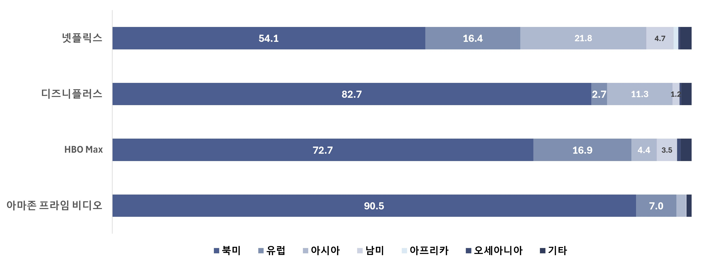
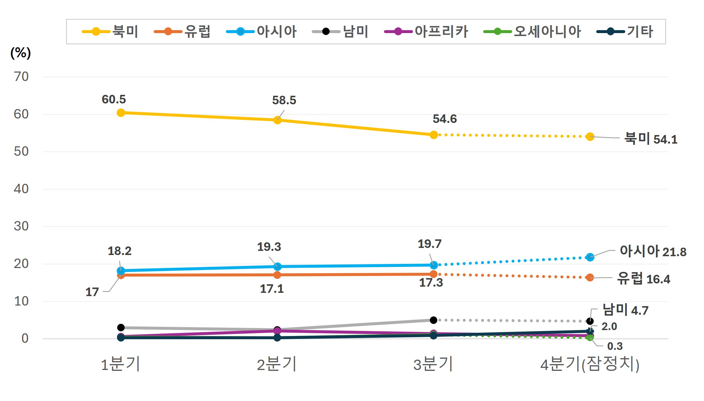
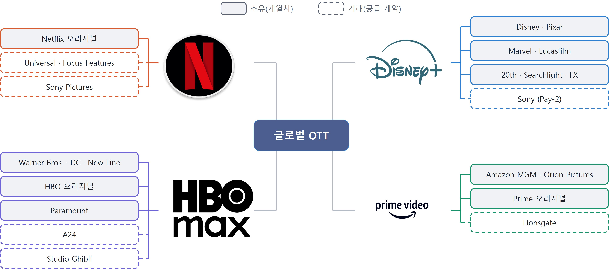

일러두기
⦁
자료 출처: 플릭스패트롤 사이트
⦁
자료 수집 시점: 2026년 11월 16일
⦁
분석 기간: 2026년 1월 1일~2026년 11월 15일
특히, 2026년 4분기 데이터는 10월 1일부터 11월 15일까지 집계된 잠정치로, 4분기 전체 기간을 반영하지 않음
⦁
분석 대상 플랫폼: 넷플릭스(Netflix), 디즈니플러스(Disney+), HBO Max, 아마존 프라임 비디오(Amazon Prime Video)
⦁
선호도 값(preferences, %) 산출 방식: 분석 기간에 각 지역에서 TOP 10에 진입한 콘텐츠를 대상으로 전체 인기점수 중 특정 범주가 차지하는 점수의 합계를 백분율로 환산함
⦁
선호도 값의 해석: % 값이 클수록 해당 지역에서 특정 국가 또는 사업자가 제작한 콘텐츠의 선호가 높음을 의미함
⦁
인기 점수(ranking point, 점) 산출 방식: 매일 특정 일, 주, 월, 연도에 대한 계산이 업데이트되며, 인기 점수는 각 플랫폼이 국가별로 제공하는 TOP 10 순위를 바탕으로 1위 10점, 2위 9점, 3위 8점… 순으로 포인트를 부여한 후 이를 합쳐서 산출함
⦁
지역 및 장르: 본 분석에서는 지역, 장르 구분은 플릭스패트롤 분류 기준을 적용함
⦁
데이터 변경 가능성: 플릭스패트롤은 수정된 결과가 있는 경우에는 게시 이후라도 업데이트가 될 수 있어, 매 분기별 원데이터 값은 분석 시점에 따라 미세한 차이가 있을 수 있음
2026년 4분기에도 분석 대상 플랫폼 모두 북미 제작 콘텐츠의 비중이 가장 높았다. 다만 플랫폼 간 차이는 큰 것으로 나타났다. 아마존 프라임 비디오의 북미 콘텐츠 선호도가 90.5%로 가장 높았으며, 다음으로 디즈니플러스가 82.7%, HBO MAX가 72.7%, 넷플릭스가 54.1% 순으로 나타났다.
상대적으로 북미 콘텐츠 비중이 낮은 넷플릭스의 경우, 아시아 콘텐츠가 21.8%로 북미에 이어 두 번째로 높은 비중을 차지한 것으로 나타났다. 이는 다른 플랫폼의 아시아 콘텐츠 비중에 비해 높은 수치다.

[그림 1] 2026년 4분기 글로벌 OTT 사업자의 권역별 콘텐츠 선호도 (단위: %)
넷플릭스의 올해 분기별 추이를 살펴보면, 북미 콘텐츠의 비중은 점차 하락한 반면 아시아 콘텐츠 비중이 점차 증가하고 있는 것으로 나타났다. 북미 콘텐츠 선호도는 1분기 60.5%에서 2분기 58.5%, 3분기 54.6%, 4분기 54.1%로 하락해 1분기보다 6.4%p 낮아졌다. 반면에 아시아 콘텐츠 선호도는 1분기에 18.2%에서 4분기 21.8%로 3.6%p 높아졌다. 한편 유럽 콘텐츠 비중은 1분기 17%에서 4분기에 16.4%로 소폭 낮아졌다.
다만 4분기 수치는 11월 15일까지만 반영한 잠정치로, 12월 말까지 반영할 경우 구체적인 수치는 달라질 수 있다.

[그림 2] 넷플릭스의 2026년 분기별 권역별 콘텐츠 선호도 추이 (단위: %)
* 유의사항: 플릭스패트롤의 데이터는 사후 수정·업데이트될 수 있으므로 데이터 수집 시점에 따라 달라질 수 있으며(현재 데이터는 2026년 11월 16일 기준 수집), 4분기에 해당하는 점선 구간은 10월 1일부터 11월 15일까지의 데이터만 반영한 잠정치임
2026년 중 한 분기라도 넷플릭스에서 자국 콘텐츠가 TOP 10 인기점수의 10% 이상을 차지한 국가는 총 22개국으로 <표 1>과 같다. 아시아 국가가 10개국으로 가장 많고, 다음으로 유럽이 9개국으로 많았다.
이 중 4분기 기준으로 자국 콘텐츠 선호 비중이 50%를 넘는 국가는 미국, 인도, 일본, 한국이다. 국가별로 나타나는 분기별 자국 콘텐츠 선호 변화를 구체적으로 살펴보면 다음과 같다.
먼저 미국은 자국 콘텐츠 비중이 1분기 86.49%에 비해 4분기에 80.85%로 5.64%p 낮아지기는 했으나, 연중 80% 이상의 높은 비중을 유지하고 있는 것으로 나타났다. 인도는 1분기에 66.07%에서 2분기에 52.03%까지 낮아졌으나, 4분기에 78.95%로 높아졌다. 지난 10월 인도 지역의 넷플릭스 TOP 10을 보면 영화와 TV쇼 모두 인도 작품이 차지한 것으로 나타났다.
다음으로 4분기에 높은 자국 콘텐츠 비중을 보인 곳은 일본이다. 일본은 1분기 자국 콘텐츠 비중이 77.96%에서 4분기 78.35%로 소폭 상승했다. 일본 역시 지난 10월 넷플릭스 TOP 10을 보면 대부분 일본 TV와 영화가 차지하고 있는 것으로 나타났다. TV쇼의 경우 애니메이션이 3편 포함되어 있다. 그리고 한국 드라마 <이상한 변호사 우영우>를 일본판으로 제작한 드라마 <미나미다 미나미 변호사는 천재형(南田南弁護士は天才肌)>도 순위에 포함되어 있다.
한국의 경우는 자국 콘텐츠 비중이 50%를 넘었으나, 1분기 77.71%였던 자국 콘텐츠 비중이 점차 하락하여 3분기에 58.41%로 크게 하락한 뒤 4분기에 61.15%로 소폭 증가했다.
지난 10월 한국에서의 넷플릭스 TOP 10을 보면 TV쇼는 중국 드라마 <가금채(嫁金钗)>를 제외하고 모두 한국 작품이었으나, 영화의 경우는 4편만이 한국 작품인 것으로 나타났다. 즉 자국 콘텐츠 비중의 감소는 영화 부문에서 한국 영화 선호가 줄어들어 영화와 TV쇼의 콘텐츠 구성이 서로 다르게 반영되었기 때문일 가능성이 있다.
이 외에도 아시아의 다른 국가에서는 인도네시아가 40% 안팎의 높은 자국 콘텐츠 비중을 유지하고 있는 것으로 나타났다. 지난 10월의 넷플릭스 TOP 10을 보면 영화 부문에서 8편이 인도네시아 작품으로 자국 영화 콘텐츠 소비가 매우 높은 것으로 나타났다. 반면에 TV쇼는 10편 중 3편만 자국 콘텐츠로 비중이 낮은 편이었다. 대만은 2분기 10.91%까지 낮아졌다가 4분기에 22.83%로 연중 최고치를 기록했고, 말레이시아는 1분기 7.60%에서 3분기 20.54%로 크게 오른 뒤 4분기에도 18.23%를 유지했다.
유럽의 경우는 국가별로 상이한 양상이 나타났다. 먼저 프랑스는 자국 콘텐츠 선호도가 2분기와 3분기에는 20% 미만으로 떨어졌으나, 4분기에는 28.90%로 크게 증가했다. 반면에 영국은 1분기 19.74%였던 자국 콘텐츠 선호도가 4분기에는 9.10%로 낮아져 10%에도 미치지 못했다. 그 외에 우크라이나는 자국 콘텐츠 선호도가 3분기 5.52%에서 4분기 22.57%로 17.05%p 상승해 유럽 9개국 중 가장 큰 증가 폭을 보였다. 네덜란드 역시 6.61%에서 13.92%로 상승했으며, 폴란드도 7.94%에서 16.47%로 증가한 것으로 나타났다.
한편 중남미 권역에서는 멕시코가, 아프리카 권역에서는 남아프리카가 올해 3분기부터 자국 콘텐츠 선호 비중이 10% 이상으로 증가한 것으로 나타났다.
대체로 자국 콘텐츠 선호도가 30%에 미치지 못하는 국가는 분기별 변동 폭이 크게 나타났다. 선호도가 TOP 10 순위 점수를 바탕으로 산출되는 만큼, 이런 국가에서는 소수 작품의 흥행 여부가 수치를 크게 움직일 수 있다는 점을 감안해야 한다.
| 권역 | 국가 | 1분기 | 2분기 | 3분기 | 4분기* |
|---|---|---|---|---|---|
| 아시아 (10개국) | 한국 | 77.71 | 68.91 | 58.41 | 61.15 |
| 일본 | 77.96 | 73.24 | 74.10 | 78.35 | |
| 인도 | 66.07 | 52.03 | 65.53 | 78.95 | |
| 인도네시아 | 42.60 | 48.04 | 35.21 | 42.37 | |
| 태국 | 25.48 | 26.58 | 27.83 | 25.96 | |
| 튀르키예 | 22.26 | 27.57 | 25.02 | 21.11 | |
| 필리핀 | 12.77 | 12.02 | 16.32 | 14.42 | |
| 말레이시아 | 7.60 | 11.89 | 20.54 | 18.23 | |
| 대만 | 15.99 | 10.91 | 14.30 | 22.83 | |
| 베트남 | 14.87 | 11.63 | 9.75 | 11.56 | |
| 북미 | 미국 | 86.49 | 86.42 | 82.26 | 80.85 |
| 중남미 | 멕시코 | 9.01 | 8.55 | 12.18 | 16.50 |
| 유럽 (9개국) | 프랑스 | 23.71 | 19.23 | 19.72 | 28.90 |
| 영국 | 19.74 | 18.92 | 12.68 | 9.10 | |
| 스페인 | 19.87 | 18.29 | 26.94 | 22.09 | |
| 이탈리아 | 19.40 | 19.66 | 10.72 | 16.65 | |
| 네덜란드 | 4.67 | 7.52 | 6.61 | 13.92 | |
| 독일 | 9.12 | 8.82 | 9.62 | 12.75 | |
| 체코 | 14.63 | 6.41 | 7.98 | 5.78 | |
| 우크라이나 | 12.46 | 9.16 | 5.52 | 22.57 | |
| 폴란드 | 7.29 | 16.14 | 7.94 | 16.47 | |
| 아프리카 | 남아프리카 | 6.63 | 5.16 | 11.07 | 14.14 |
<표 1> 2026년 분기별 넷플릭스 플랫폼의 국가별 자국 콘텐츠 선호도 (단위: %)
- 참고: 2026년 중 한 분기라도 자국 콘텐츠 선호 비중이 10% 이상인 국가를 정리함
- 유의사항: 분기별 수치는 플릭스패트롤에서 수정하여 업데이트하기 때문에 데이터 수집 시점에 따라 달라질 수 있으며(현재 데이터는 2026년 11월 16일 기준 수집), 4분기* 데이터는 10월 1일부터 11월 15일까지만 반영한 잠정치임
플랫폼의 권역별 콘텐츠 선호도의 차이는 이용자의 취향뿐 아니라 이용자가 선택할 수 있는 콘텐츠가 얼마나 공급하는지와도 긴밀하게 연관되어 있다. 따라서 플랫폼별 콘텐츠 선호도의 차이를 이해하기 위해서는 각 사업자가 콘텐츠를 확보하는 구조를 살펴볼 필요가 있다.
현재 전 세계에 영상 콘텐츠를 제공하고 있는 주요 글로벌 OTT 사업자로는 넷플릭스, 디즈니플러스, HBO MAX, 아마존의 프라임 비디오를 들 수 있다. 이들 4개 사업자가 콘텐츠를 공급하는 방식은 크게 자사가 소유한 계열사를 통해 직접 제작 공급하는 것과 외부 스튜디오와의 공급 계약을 통해 거래를 하는 것으로 구분할 수 있다.
북미 콘텐츠 선호도가 80%를 넘는 디즈니플러스와 아마존 프라임 비디오는 미국 스튜디오 중심의 공급 구조를 갖고 있다. 디즈니플러스는 디즈니·픽사, 마블·루카스필름, 20세기 스튜디오·서치라이트·FX 등 계열 스튜디오의 작품이 주를 이루고, 외부 공급은 소니 픽처스의 페이투(Pay-2) 계약 정도다. 페이원(Pay-1)이 극장 개봉 이후 영화가 처음으로 구독형 플랫폼에 독점 공개되는 창구라면, 페이투(Pay-2)는 그다음 창구를 가리킨다. 제작사는 일반적으로 페이원 이후에 추가 수익을 위해 다른 스트리밍 플랫폼에 독점적으로 라이선스를 제공한다. 아마존 프라임 비디오는 아마존 MGM 스튜디오와 오라이언 픽처스 등 계열 제작사의 작품과 자체 오리지널을 중심축으로 공급 체계를 구축하고 있다. 2026년 개봉작부터는 외부 제작·유통사인 라이온스게이트로부터 영화를 공급받는다.
HBO Max는 워너브라더스·DC·뉴라인 시네마와 HBO 오리지널이 중심이다. 2026년 10월 파라마운트의 워너브라더스 디스커버리 인수가 마무리되면서 HBO Max는 파라마운트 픽처스와 같은 모회사 아래에 놓이게 됐다. 외부 공급으로는 A24와의 미국 내 페이원 독점 계약과 스튜디오 지브리 작품이 있다.
넷플릭스는 할리우드 메이저 스튜디오를 계열사로 두지 않고, 자체 오리지널과 외부 스튜디오 계약을 함께 운영한다. 유니버설 픽처스와 포커스 피처스의 작품이 2026년 1월부터 넷플릭스로 공급되고 있고, 소니 픽처스와는 2026년 1월 페이원 계약을 전 세계로 넓히기로 했다. 넷플릭스의 비북미 콘텐츠 비중이 45.9%에 이르고 한국·일본·인도에서 자국 콘텐츠 선호도가 60~80%에 달하는 것은, 각국에서 제작한 오리지널을 주요 공급원으로 삼는 구조와 관련지어 해석할 수 있다.
이처럼 선호도 수치에는 이용자의 선택과 플랫폼의 공급이 함께 반영된다. 공급 계약이 변경되면 특정 스튜디오의 신작이 공개되는 플랫폼이 달라지고, 그 결과가 TOP 10 구성에 영향을 미칠 수 있다. 다만 위의 공급 계약은 미국 시장을 기준으로 한 것이며, 다른 국가에서는 현지 배급 계약에 따라 같은 작품이 다른 플랫폼에서 서비스될 수 있다.

[그림 3] 주요 글로벌 OTT 사업자의 콘텐츠 공급 체계
(출처: 언론 보도를 바탕으로 편집부 구성)
2026년 4분기 데이터가 비록 잠정적 수치이기는 하지만 플릭스패트롤의 지표를 통해서 몇 가지 결론을 이끌어 낼 수 있다. 먼저 글로벌 OTT 사업자들의 전략적 행보다. 아마존 프라임과 디즈니플러스는 미국 스튜디오 중심의 공급 구조를 바탕으로 북미 제작 콘텐츠의 비중이 높게 나타난 반면, 넷플릭스의 경우 다양한 방식을 통해 현지화 전략을 강화하고 있음을 알 수 있다. 인도·대만·프랑스·우크라이나 등 일부 국가에서 자국 콘텐츠 선호도가 높아진 현상에서도 이러한 공급 구조를 엿볼 수 있다.
한국 콘텐츠산업과 관련해서는, 넷플릭스의 아시아 콘텐츠 선호도가 1분기 18.2%에서 4분기 21.8%로 올랐지만, 같은 기간 한국 내 자국 콘텐츠 선호도는 77.71%에서 61.15%로 낮아졌다. 지난 10월 한국의 넷플릭스 TOP 10을 보면 TV쇼는 1편을 제외하고 모두 한국 작품이었던 반면, 영화는 10편 중 4편만 한국 작품이었다. 물론 본고에서 살펴본 지표는 시청 시간이나 시청 계정 수가 아니라 TOP 10 순위에 부여한 점수의 구성비이며, 순위권 밖의 소비는 반영하지 못한다는 한계가 있어 해석에 유의해야 한다. 그럼에도 영화 부문의 낮은 자국 콘텐츠 비중이 국내 영화의 제작·공급 여건과 같은 구조적 요인과 관련된 것은 아닌지 살펴볼 필요가 있다.